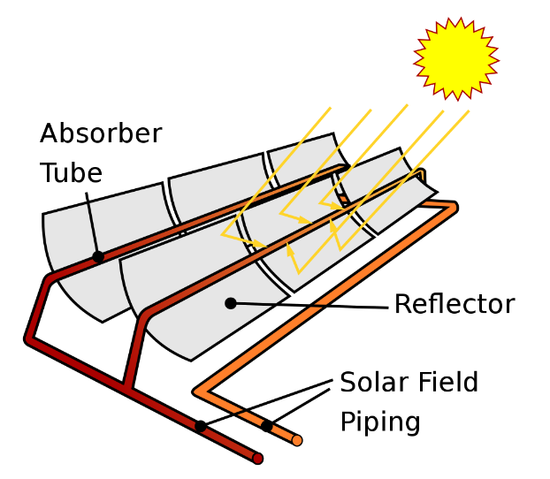

Solar Thermal Power Plant
A solar thermal power plant harnesses the sun's energy to generate electricity through the use of mirrors or lenses to concentrate sunlight onto a receiver.
This receiver contains a fluid, often a heat transfer fluid like molten salt or oil, which absorbs the concentrated sunlight and heats up. The heated fluid is then used to produce steam, which drives a turbine connected to a generator, producing electricity.

Solar thermal power plants are important in a smart grid because they offer a reliable source of renewable energy generation.
Their ability to store heat allows for continuous electricity production even when sunlight is unavailable, contributing to grid stability and resilience.
Additionally, their integration into the grid helps diversify energy sources, reduce carbon emissions, and promote sustainability in energy production.